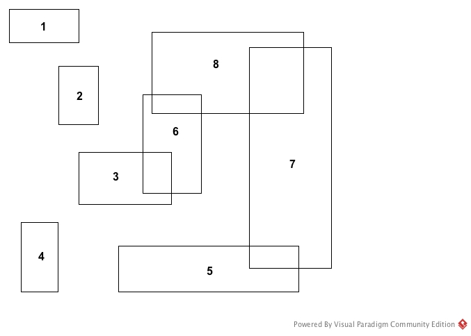

Exercise Set #6
CS 332/780: Object-Oriented Databases
Keitaro Yukawa, Department of Computer Science, Queens College, CUNY
Exercise Set #6
1.
Consider B+ trees of order N = 300.
Presume that the index field is a key.
- Compute the minimum and maximum number of objects that can be covered by trees of height 1
(height starts from 0 at the root).
- Compute the minimum and maximum number of objects that can be covered by trees of height 2.
- Compute the lower and upper bound on height of the trees that cover M = 1012 index values.
2.
-
Consider a hash table containing 107 indexes, with
each full node (page) containing 250 indexes.
Assuming the uniform hashing property,
compute the approximate number of nodes per linked list for
each of the array sizes N = 103, 104,
105, 106.
-
Consider B+ trees of order N = 250.
Presuming that the index field is a key,
compute the lower and upper bound on height of the trees that cover M = 107 indexes.
3.
The standard page size for today's PCs is 4 KB = 4096 bytes.
Consider B+ trees whose nodes each have 4096 bytes.
Assume that 4 bytes are used by each index and by each pointer, and
44 bytes are set aside in each node for bookkeeping purposes.
-
Compute the largest possible number of pointers in each node
(i.e., the largest possible order N).
-
Compute the lower and upper bound on height of the trees that cover M = 109 index values.
-
Consider hash tables whose full nodes have the same number of pointers obtained in Q (a).
Assuming that M = 109 index values are covered with the uniform hashing property,
compute the approximate number of nodes per linked list for
each of the array sizes 104,
105, 106, 107.
4.
Informally but concisely describe an algorithm for the following function to process range queries
in B+ trees:
getObjectsInRange(p, k1, k2)
p is a pointer to the root of a B+ tree
k1 and k2 are index values such that k1 ≤ k2
The function retrieves all objects with index values in the range k1 through k2, inclusive.
5.
Explain why B+ tree indexes are superior to hash table indexes for range queries.
6.
Consider B+ tree index.
Describe algorithms for:
- finding the object(s) with the minimum index value.
- finding the object(s) with the maximum index value.
- processing all the objects one by one in the sorted, increasing order of their index values.
7.
Let M be the total # of objects covered by a B+ tree. Presume that the index field is a key.
- The runtime efficiency of the B+ tree search operation is (choose the correct one):
Θ(1), Θ( log(M) ), Θ( M ), Θ( M log(M) ), Θ( M2 )
- The runtime efficiency of the B+ tree insertion operation is (choose the correct one):
Θ(1), Θ( log(M) ), Θ( M ), Θ( M log(M) ), Θ( M2 )
- The runtime efficiency of the B+ tree deletion operation is (choose the correct one):
Θ(1), Θ( log(M) ), Θ( M ), Θ( M log(M) ), Θ( M2 )
8.
Indicate if each of the following is true or false.
- Hash table and B+ tree indexes are created to reduce the amount of disk space used by the database.
- Hash table and B+ tree indexes are created to enhance time efficiency of object retrieval.
- Hash table and B+ tree indexes can only be created on key fields of classes.
- Except the root, each node of any B+ tree of order 50 must have at least 24 index values.
- Each node of any B+ tree of order 50 may have up to 100 index values.
- Leaf nodes of B+ trees may be at different levels (i.e., heights).
- (optional question) B+ tree rotations are used to eliminate overflowing of a node.
- (optional question) B+ tree rotations are used to split overflowing nodes.
- Hash table retrieval is always more efficient than
B+ tree retrieval regardless of the array size and the number of indexes covered.
9.
Consider B+ trees of order N = 3 that use integers for index values.
- Display one B+ tree of the maximum height that contains
the indexes 1 through 10 in the leaf nodes.
- Display one B+ tree of the minimum height that contains
the indexes 1 through 10 in the leaf nodes.
- Do Q (a) and Q (b) with B+ trees of order N = 4.
10.
Consider B+ trees of order N = 3 with integer index values.
- Starting with an empty tree, insert the integers 1 through 10 cumulatively,
and show a picture illustrating the step-by-step growth of the tree.
- Starting with the tree constructed in Q (a), delete the integers 1 through 10 successively,
in this order, and show a picture illustrating the step-by-step contraction of the tree.
- Do Q (a) and Q (b) with B+ trees of order N = 4.
11.
Consider the B+ tree of order N = 4 on the last page of Course Notes #10.
- Starting with this tree, insert the integers 81, 82, 83, 85, 86 cumulatively, and
show a picture illustrating the step-by-step growth of the tree.
Only show the changing parts of the tree.
- Starting with this tree, delete the integers 12, 17, 3, 6, 9 successively, in this order, and
show a picture illustrating the step-by-step contraction of the tree.
Only show the changing parts of the tree.
12.
Consider the following 2D MBBs of 8 objects.

-
Give diagrams of two R trees with N1 = 2, N2 = 4 covering the 8 MBBs.
Answers are hardly unique – many such R trees exist.
-
Give diagrams of two R+ trees with N1 = 2, N2 = 4 covering the 8 MBBs.
Answers are hardly unique – many such R+ trees exist.
-
Choose a few sample boxes, B, and trace the search path(s) of the four search operations on B
in your R trees and R+ trees.